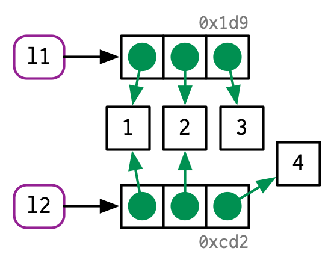
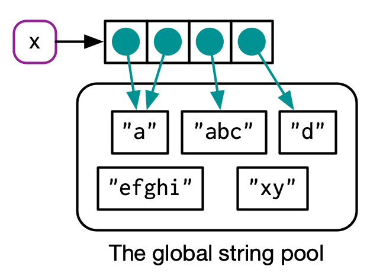

The {lobstr} package will help us throughout the chapter
my_variable, x, cpp11, .by.
?Reserved<-tracemem to validate if values are copied or modifiedtracemem shows internal C code minimizes copyingref() shows the memory address of a list and its elements#> [1] "0x1624e315d68"#> █ [1:0x1624e315d68] <list>
#> ├─[2:0x1624e77ebd0] <dbl>
#> ├─[3:0x1624e77ea10] <dbl>
#> └─[4:0x1624e77e850] <dbl>
#>
#> █ [5:0x1624e34ed18] <list>
#> ├─[2:0x1624e77ebd0]
#> ├─[3:0x1624e77ea10]
#> └─[6:0x1624e754e70] <dbl>
#> [1:0x1624ff60cb0] <int>#> [1:0x162500b4318] <int>#> █ [1:0x1625089a188] <chr>
#> ├─[2:0x16241da3118] <string: "a">
#> ├─[2:0x16241da3118]
#> └─[3:0x1624818b3b8] <string: "b">#> █ [1:0x16250892930] <chr>
#> └─[2:0x16241da3118] <string: "a">
lobstr::obj_sizebench::mark()med <- function(d, medians) {
for (i in seq_along(medians)) {
d[[i]] <- d[[i]] - medians[[i]]
}
}
x <- data.frame(matrix(runif(5 * 1e4), ncol = 5))
medians <- vapply(x, median, numeric(1))
y <- as.list(x)
bench::mark(
"data.frame" = med(x, medians),
"list" = med(y, medians)
)[, c("min", "median", "mem_alloc")]#> # A tibble: 2 × 3
#> min median mem_alloc
#> <bch:tm> <bch:tm> <bch:byt>
#> 1 52.7µs 71.2µs 491KB
#> 2 16.8µs 35.1µs 391KBgc() explicitly clears out unbound objects